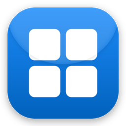

Winly Start · last updated 9 September 2026
Winly Start is a small project, so the roles below describe responsibilities rather than a large team. All accounts holding any of these roles have multi-factor authentication enabled.
| Role | Who | What they may do |
|---|---|---|
| Authors | Mahi-BD | Commit to main in the
WinlyStart repository. |
| Reviewers | Mahi-BD | Review every contribution that comes from outside the project before it is merged. No external pull request is merged without review. |
| Approvers | Mahi-BD | Approve each individual signing request. Approval is per build, never standing. |
v* tag to the public repository..github/workflows/build.yml.
Nothing is ever built or uploaded from a developer machine.signtool verify /pa and fails the
build if any file is unsigned.Signing credentials live only in the CI provider's secret store and in the signing service. They are never present on a developer machine and never in the repository.
We sign only binaries built from our own source, in this repository. We do not sign third-party or upstream binaries. Every signed file carries product name, version, company and copyright in its version resources.
Winly Start collects nothing. There is no telemetry, no analytics, no
advertising, no accounts and no crash reporting. Settings and layout stay in
%LocalAppData%\WinlyStart on the user's own machine. The only network request the app
can make is to a website the user chooses to add as a tile, in order to read that site's icon and
preview image. Full details are in the
privacy policy.
Winly Start is a per-user install and never asks for administrator rights. It writes only to
%LocalAppData%\WinlyStart, plus a single optional
HKCU\Software\Microsoft\Windows\CurrentVersion\Run value if the user turns on
"Start with Windows". It installs no drivers and no services, never injects into other processes,
and never patches system files.
To intercept the Start button and the Windows key it installs two ordinary user-mode hooks
(WH_KEYBOARD_LL and WH_MOUSE_LL) inside its own process. No
keystroke is logged, stored or transmitted — the keyboard hook checks only whether the
pressed key is the Windows key and passes everything else straight through. Closing the app removes
the hooks immediately and Windows 11 behaves exactly as before.
Windows Settings → Apps → Winly Start → Uninstall, or the entry in Add/Remove Programs. The
portable build is removed by deleting its folder. Uninstalling leaves your settings and tile layout
in %LocalAppData%\WinlyStart; delete that folder to remove them too.
Security concerns, suspected misuse of our signing certificate, or Code of Conduct complaints: github.com/Mahi-BD/WinlyStart/issues. We will investigate and assist in verifying any complaint.